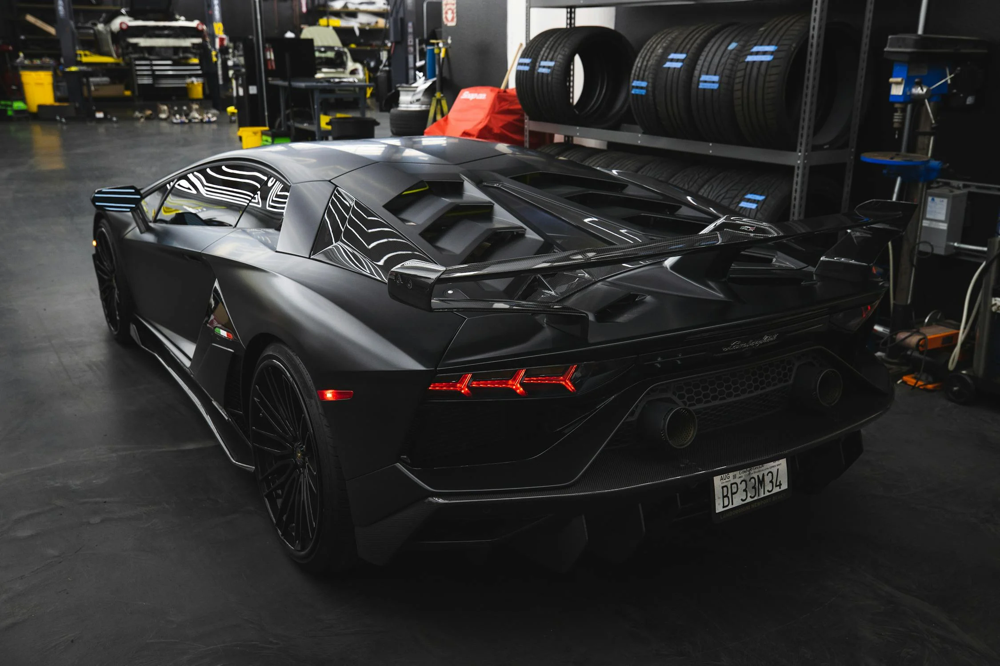
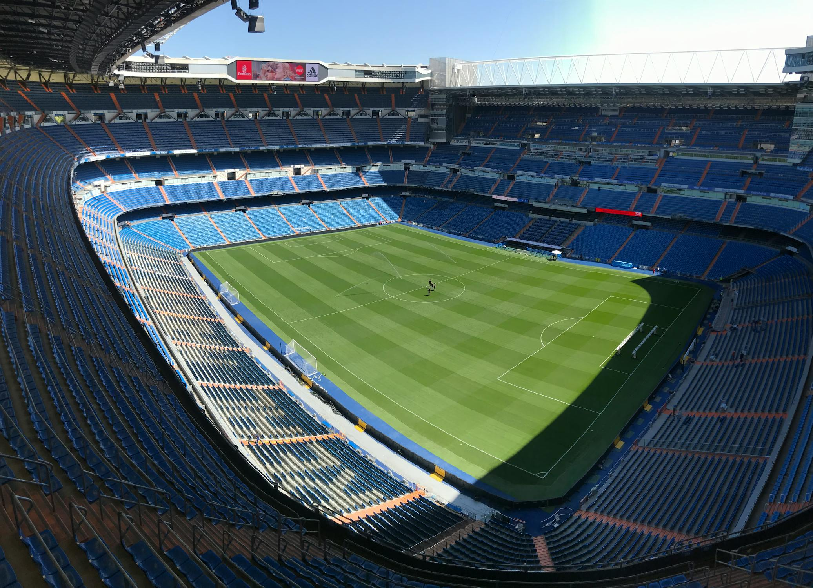

Divers
Mes Centres d'Intérêt
Automobile
Je suis passionné d'automobile depuis mon plus jeune âge. En effet, j'ai très vite échangé les dessins animés contre des émissions automobiles comme Top Gear (France et UK). Aujourd'hui, je m'intéresse plutôt aux voitures sportives modernes et à leur histoire.
Pour concrétiser ma passion, je suis allé au musée national de l'automobile cette année à Mulhouse, pour observer des voitures remplies d'histoire. Enfin, j'ai eu la chance de conduire ma première voiture sportive (Alpine A110S) sur le circuit de Ladoux (63).
Football
Depuis 3 ans, je m'intéresse au football. Je suis l'actualité sportive, mais j'apprends à connaître l'histoire du football, notamment mon club favori qui est le plus titré d'Europe : le Real Madrid.
Je vais régulièrement regarder des matchs du Clermont-Foot 63 pour passer de bons moments mémorables avec mes amis. Je n'ai malheureusement pas pu regarder un match du Real Madrid, mais j'envisage de partir à Madrid pour visiter le musée de ce club mythique créé en 1902, afin de découvrir plus de 120 ans d'histoire.
Mes Activités
Cuisine

Depuis 6 mois, j'ai découvert la joie de la cuisine. Je cuisine plutôt des pâtisseries, même s'il m'arrive parfois de cuisiner quelques plats de résistance.
Je ne cuisine quasiment jamais seul. En effet, pour moi, la cuisine est un endroit qui nous permet de passer un bon moment avec un proche, tout en s'éloignant des écrans pendant une après-midi ou une journée. Par ailleurs, vous pouvez voir ci-dessus le dernier gâteau que j'ai réalisé, pour l'anniversaire d'une amie.
En conclusion, la cuisine m'a aidé à travailler en équipe dans un autre domaine que le domaine scolaire, et elle contribue à développer de la rigueur, car un mauvais dosage ou le remplacement d'un ingrédient pourrait totalement changer le résultat gustatif ou esthétique d'une recette.
Assemblage d'ordinateurs

Depuis une dizaine d'années, j'aide mon père à assembler des ordinateurs.
Désormais, j'aide mes amis et proches à trouver la meilleure configuration d'ordinateur en fonction de leur utilisation (bureautique ou pour les performances), puis j'assemble cette configuration afin d'obtenir un ordinateur fonctionnel.
Cette activité me permet d'aider les autres tout en renforçant mes connaissances en informatique à travers les différents problèmes que j'ai rencontrés lors de l'assemblage de leurs ordinateurs.